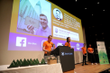

Stutt kynning um mig
Ég heiti Ísar Loki Pálmason, er kallaður Loki.
Fæddur 20. desember, alveg eins og pabbi :D !
Átti að fæðast 4. janúar árið eftir, rétt eins og pabbi :D !
Ég er kominn með grunnskólamentun, og á eitt ár eftir í menntaskóla
Ég er nú samt orðinn stúdent í stærðfræði og eðlisfræði

Ég er búinn að vinna í Bónus í Mosfellsbæ síðan í byrjun 10. bekkjar og er nú "unoffical" helgarstjóri þar.
Ástæðan afhverju ég er "unoffical" er vegna þess að ég er ekki orðinn 18 ára. En þeir treysta mér
nógu mikið greinilega að þeir leyfa þessu að sleppa því það er svo stutt í að ég verð 18 ára!
Ég náði að fá systur mína og að meira segja pabba minn í Bónus í helgarstarf til gamans, hraustleika og smá auka pening!
Ég drekk ekki þrátt fyrir að vera klikkaður partý kall 😉 og allir fýla að hafa "rússneska hardbass trap meme dansarann"
, já þetta er skrýtið kombó en þetta virkar þegar allir eru fullir og vitlausir 😀 🙃